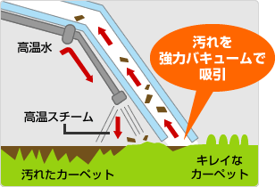
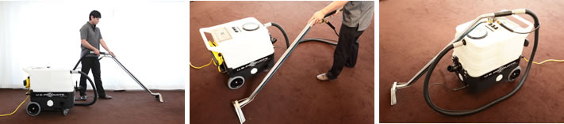
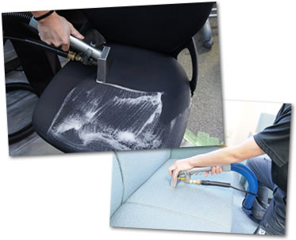

椅子やソファーのクリーニングはタック HOME > タックの特徴 >エコ洗剤と最新機器でお客様のインテリアを綺麗にします！
エコ洗剤と最新機器でお客様のインテリアを綺麗にします！

当社では数多くある業務用洗浄機器のなかからUS PRODUCTS社のエクストラクターを使用しています。US PRODUCTS社は業界の中でも老舗企業で高い技術力と信頼性を持っております。タックではその中でも最新機器のCOBRA HS300を導入しています。お客様の大切な椅子やソファーを扱うからこそ私たちは道具にこだわります。


インテリアクリーニング業においてとても重要になってくるのは「洗剤」です。当社ではこの業界の先進国であるアメリカの最新トレンドを常に吸収しながら、洗剤選びをおこなっております。この10年の中で洗剤を取り巻く状況も変わりつつあります。ただ単に汚れが落ちる強力なケミカル洗剤から環境に配慮したエコ洗剤へのシフトが起こっています。当社は環境にやさしいエコ洗剤を使って、僅かながらでも環境貢献ができればと考えております。